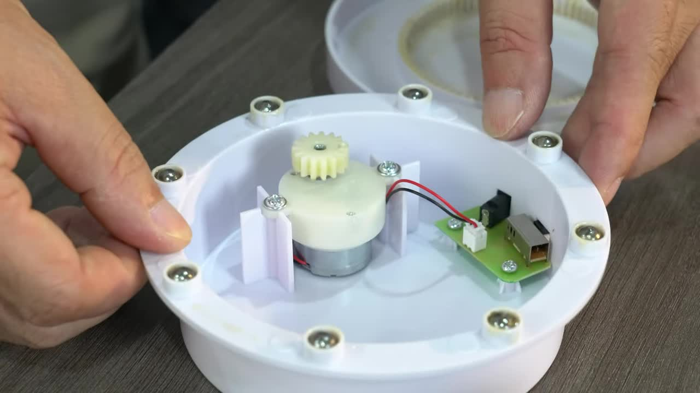
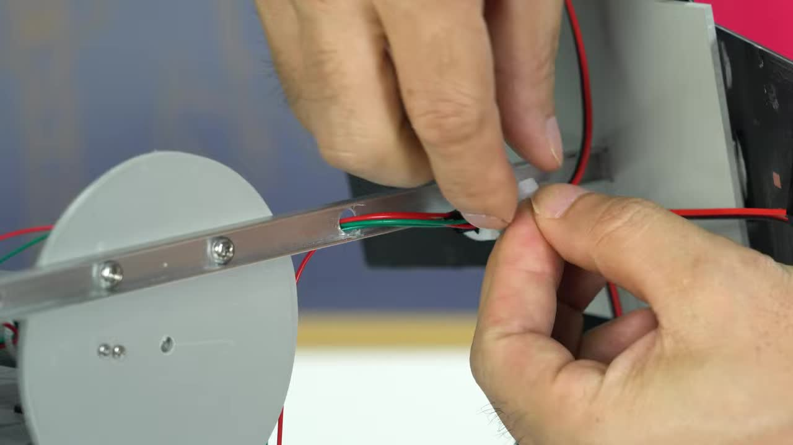

如何自制一台
太阳方位追踪仪
DIY a Solar Azimuth Tracker
项目概述与特点 Project Overview & Features
这个项目展示了一个能够实时跟踪并锁定太阳位置的太阳方位追踪仪。它结构简单，可以实现24小时全天候追踪太阳的方位和位置。 This project demonstrates a Solar Azimuth Tracker capable of real-time tracking and locking the sun's position. Its structure is simple and it can achieve 24/7 tracking of the sun's azimuth and position.
太阳能感应追踪
Solar Sensing & Tracking
通过前后两组太阳能电池检测光照方向
Uses two sets of front and back solar panels to detect light direction
双减速马达驱动
Dual Geared Motor Drive
两个减速马达分别控制水平和垂直方向的运动
Two geared motors control horizontal and vertical movement respectively
全方位角度调整
Full Angular Adjustment
根据光照差异自动调整方位和仰角
Automatically adjusts azimuth and elevation based on light differences
基于太阳能电池供电
Powered by Solar Panels
利用太阳能电池产生的电压驱动电机
Uses voltage generated by solar panels to drive motors
步骤 1：查看水平旋转底座结构 Step 1: Inspect Horizontal Rotation Base Structure
打开设备的圆形底座，可以看到内部有一个小型减速马达和电路板 (PCB)。底座边缘有多颗滚珠用于平稳旋转。 Open the device's round base to see the internal small geared motor and circuit board (PCB). The base edge has multiple ball bearings for smooth rotation.
将马达的导线连接到电路板上。 Connect the motor wires to the circuit board.
步骤 2：制作水平马达安装板 Step 2: Fabricate Horizontal Motor Mount Plate
粘合多层塑料板，制作马达安装平台，并在中心开孔安装轴承 (内径 5mm, 外径 10mm)。将马达安装支架固定到平台上。 Bond multiple plastic sheets to create the motor mount platform, drill a hole in the center and install a bearing (Inner diameter: 5mm, Outer diameter: 10mm). Fix the motor mount bracket to the platform.
步骤 3：组装水平旋转单元 Step 3: Assemble Horizontal Rotation Unit
将制作好的马达安装板固定到圆形底座的旋转部分上。 Fix the fabricated motor mount plate onto the rotating part of the round base.
步骤 4：制作主垂直轴承座块 Step 4: Fabricate Main Vertical Shaft Bearing Block
粘合多层塑料板制作一个较厚的方块，在中心钻孔并安装一个较大的直线轴承 (内径 10mm, 外径 19mm)。这个轴承将支撑整个面板臂的垂直轴。 Bond multiple plastic sheets to make a thick block, drill a hole in the center and install a larger linear bearing (Inner diameter: 10mm, Outer diameter: 19mm). This bearing will support the vertical shaft of the entire panel arm assembly.
步骤 5：将轴承座块固定到底座上 Step 5: Fix Bearing Block onto the Base
将垂直轴承座块粘合固定到水平旋转底座的中心位置。 Bond and fix the vertical bearing block to the center of the horizontal rotation base.
步骤 6：制作面板支撑臂和安装件 Step 6: Fabricate Panel Support Arm and Mounts
切割并整形铝合金型材作为主支撑臂。同时切割和弯折小的铝合金片，用于固定太阳能电池板。 Cut and shape aluminum profile for the main support arm. Also cut and bend small aluminum pieces to fix the solar panels.
步骤 7：组装太阳能电池板到支撑臂 Step 7: Assemble Solar Panels onto Support Arm
将制作好的铝合金安装件固定到太阳能电池板上。然后将这些电池板组件固定到主支撑臂的两端。每端似乎安装了两组电池板，呈一定角度。 Fix the fabricated aluminum mounts to the solar panels. Then fix these panel assemblies to both ends of the main support arm. Each end seems to have two sets of panels installed at an angle.
步骤 8：制作垂直连接轴 Step 8: Fabricate Vertical Connecting Shaft
切割金属圆棒。在圆棒的两端开槽，并在其中一个槽下方钻孔。这个轴连接面板支撑臂和底座。 Cut a metal rod. Make slots at both ends of the rod and drill a hole below one of the slots. This shaft connects the panel support arm and the base.

在钻孔处安装一个固定环，用于防止轴下滑。 Install a set screw collar at the drilled hole to prevent the shaft from sliding down.

步骤 9：组装支撑臂和垂直轴 Step 9: Assemble Support Arm and Vertical Shaft
将面板支撑臂（带太阳能电池板和垂直马达）连接到垂直连接轴上。垂直马达控制面板的仰角调整。 Connect the panel support arm (with solar panels and vertical motor) to the vertical connecting shaft. The vertical motor controls the elevation adjustment of the panels.
步骤 10：完成整体机械组装 Step 10: Complete Overall Mechanical Assembly
将组装好的支撑臂和垂直轴插入底座上的轴承座中。安装主支撑柱（灰色的圆管）。 Insert the assembled support arm and vertical shaft into the bearing block on the base. Install the main support column (the gray tube).

步骤 11：布线及整理 Step 11: Wiring and Cable Management
连接来自太阳能电池板和垂直马达的导线到水平旋转底座内的电路板上。用束线带固定好导线，保持整洁。 Connect the wires from the solar panels and vertical motor to the circuit board inside the horizontal rotation base. Secure the wires with zip ties for tidiness.
这里演示了太阳能电池板和马达驱动的基本原理：当某个方向的电池板接收到更多阳光时，产生的电流会驱动马达朝该方向转动，直到光照均匀。 This demonstrates the basic principle of solar panel and motor drive: when panels in a certain direction receive more sunlight, the generated current drives the motor to turn in that direction until the light is balanced.

步骤 12：水平旋转功能测试 Step 12: Horizontal Rotation Functional Test
通过模拟光照（例如使用卡纸遮挡部分电池板），测试水平旋转机构是否能正常工作，并演示追踪太阳方位的功能。 By simulating light (e.g., using cardboard to block some panels), test if the horizontal rotation mechanism works properly and demonstrate the function of tracking the sun's azimuth.
步骤 13：最终追踪效果演示 Step 13: Final Tracking Demonstration
展示太阳方位追踪仪在室外环境中，实时跟随太阳的方位和仰角进行调整。 Show the solar azimuth tracker adjusting in real-time to follow the sun's azimuth and elevation in an outdoor environment.